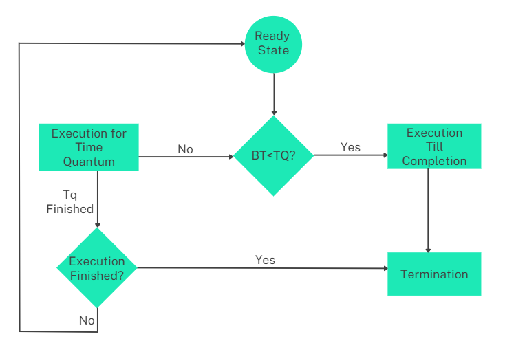

This scheduling algorithm is preemptive version of First come first serve scheduling algorithm. The Algorithm focuses on Time Sharing. In this algorithm, every process gets executed in a cyclic way. A certain time slice is defined in the system which is called time quantum. Each process present in the ready queue is assigned the CPU for that time quantum, if the execution of the process is completed during that time then the process will terminate else the process will go back to the ready queue and waits for the next turn to complete the execution.

There are six processes - P1, P2, P3, P4, P5 and P6.
Their arrival time and burst time are given below in the table. The time quantum of the system is 4 units.
Initially, at time = 0, only P1 has arrived and is scheduled for the time slice of 4 units. Burst time of P1 is 5 units, so it will be executed for 4 units first.
During the execution of P1 - P2, P3, P4, P5 have arrived in the ready queue. As P1 execution is incomplete, it is added back to the ready queue.
Ready queue: P2 -> P3 -> P4 -> P5 -> P1
Next, P2 is executed for 4 units of time and during its execution p6 also joined the ready queue. As P1 execution is incomplete, it is added back to the ready queue.
Ready queue: P3 -> P4 -> P5 -> P1 -> P6 -> P2
P3 will be executed for next 3 units of time until its completion. And the ready queue will not have any new entries.
P4 will be executed for next 1 unit of time until its completion. And the ready queue will not have any new entries.
Ready queue: P5 -> P1 -> P6 -> P2
Next, P5 is executed for 4 units of time. As P5 execution is incomplete, it is added back to the ready queue.
Ready queue: P1 -> P6 -> P2 -> P5
P1 will be executed for next 1 unit of time until its completion. And the ready queue will not have any new entries.
P6 will be executed for next 4 units of time until its completion. And the ready queue will not have any new entries.
Ready queue: P2 -> P5
P2 will be executed for next 2 units of time until its completion. And the ready queue will not have any new entries.
P5 being the last process in the ready queue, it will be executed for 1 unit of time until its completion.
Gantt Chart:Average waiting time = (12+16+6+8+15+11) / 6 = 68/6 = 11.33